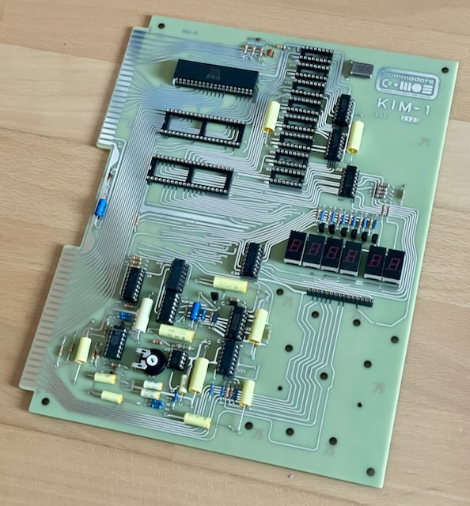
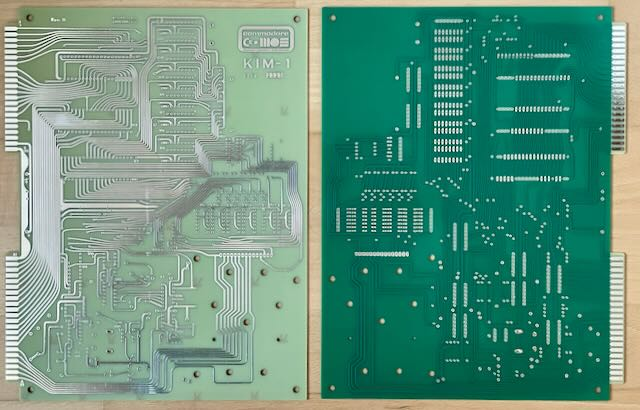

Dies ist eine getreue Replik des MOS KIM-1.
Benötigt wird noch ein Keypad (normale Ausführung oder mit MX Switches).
Die beiden 6530 RRIOT sind kaum aufzutreiben, können aber mit einer Adapterplatine durch 6532 RIOT ersetzt werden.
Die 6102 SRAM sind recht teuer (ca. €5 pro Stück), ich arbeite an einer Adapterplatine für größere SRAM Chips.
Projekt-Homepage • Interakiver Bestückungsplan
 
| Komponente | Anzahl | Preis | Anbieter |
| Platine | 1 | €7.00 | |
| 47Ω Widerstand | 1 | €0.04 | Reichelt |
| 82Ω Widerstand | 7 | €0.21 | Reichelt |
| 100Ω Widerstand | 6 | €0.18 | Reichelt |
| 150Ω Widerstand | 2 | €0.06 | Mouser • Reichelt |
| 220Ω Widerstand | 1 | €0.04 | Reichelt |
| 560Ω Widerstand | 6 | €0.18 | Reichelt |
| 1kΩ Widerstand | 12 | €0.48 | Reichelt |
| 2.2kΩ Widerstand | 2 | €0.08 | Reichelt |
| 3.3kΩ Widerstand | 5 | €0.15 | Reichelt |
| 10kΩ Widerstand | 5 | €0.20 | Reichelt |
| 30kΩ Widerstand | 1 | €0.03 | Reichelt |
| 47kΩ Widerstand | 2 | €0.08 | Reichelt |
| 330kΩ Widerstand | 1 | €0.04 | Reichelt |
| 5MΩ Widerstand | 1 | €0.12 | Mouser |
| 5kΩ Potentiometer PT15LV18 | 1 | €0.79 | Mouser |
| 10pF Kondensator | 1 | €0.05 | Reichelt • Mouser |
| 102MWR630K 1nF Kondensator | 1 | €0.68 | Mouser |
| WMC08D68K-F 6.8nF Kondensator | 3 | €4.98 | Mouser |
| 223MWR102K 22nF Kondensator | 1 | €1.10 | Mouser |
| 473MPW160K 47nF Kondensator | 1 | €0.65 | Mouser |
| 104MWR400K 100nF Kondensator | 5 | €2.70 | Mouser |
| 224MWR100K 220nF Kondensator | 3 | €1.83 | Mouser |
| 334MPW160K 330nF Kondensator | 1 | €0.84 | Mouser |
| 1µF Elektrolytkondensator, 50V | 2 | €0.28 | Reichelt • Mouser |
| BC327 Transistor | 6 | €0.60 | Mouser |
| BC338 Transistor | 1 | €0.10 | Mouser |
| 1N914 Diode | 5 | €0.15 | Reichelt |
| 1N4001 Diode | 2 | €0.06 | Reichelt |
| 1N4735 Diode | 1 | €0.11 | Mouser |
| 1MHz Quarz | 1 | €0.21 | AliExpress • Mouser |
| 556 Timer | 1 | €0.43 | Reichelt |
| 565 PLL | 1 | €5.87 | eBay |
| 6102 SRAM | 8 | — | |
| 6502 CPU | 1 | €3.05 | AliExpress |
| 6530 RRIOT | 2 | — | |
| 74LS00 | 1 | €0.65 | Reichelt |
| 74LS04 | 1 | €0.96 | Reichelt |
| 74LS06 | 1 | €0.68 | Reichelt |
| 74LS38 | 1 | €0.24 | Reichelt |
| 74LS145 | 2 | €2.02 | Reichelt |
| 74LS125 | 2 | €0.46 | Reichelt |
| LM311 | 1 | €0.34 | Reichelt |
| 8-Pin Sockel, schmal | 1 | €0.25 | Reichelt |
| 14-Pin Sockel, schmal | 8 | €1.68 | Reichelt |
| 16-Pin Sockel, schmal | 10 | €2.10 | Reichelt |
| 40-Pin Sockel, breit | 3 | €1.77 | Reichelt |
| MAN72A 7-Segment-Display | 6 | €13.20 | eBay |
| nur Platine | €7.00 | ||
| Teilbausatz | €57.72 |